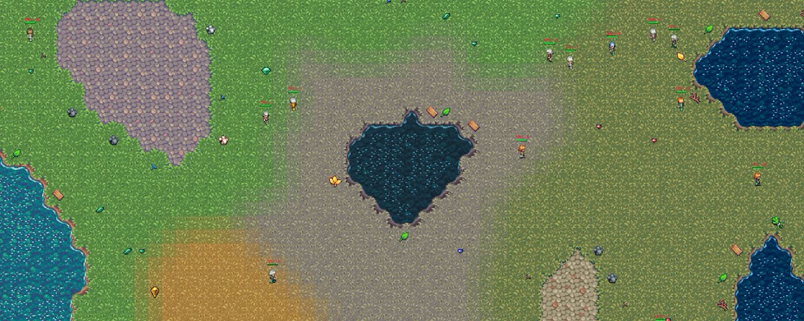
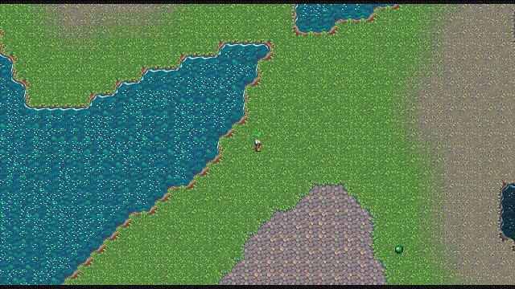
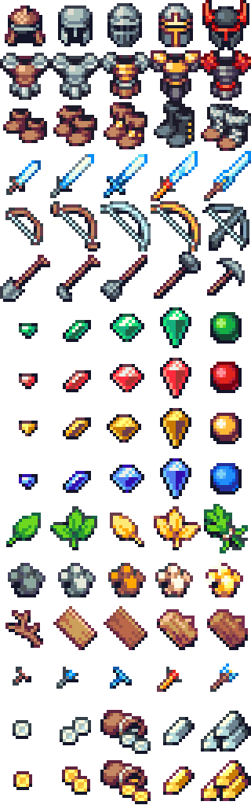
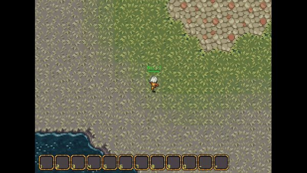
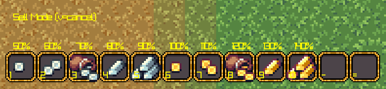

Neural MMO 3.0

The real world is not just multiagent, it's massively multiagent. I spent 7+ years during and before my PhD developing Neural MMO, a game-inspired environment for many-agent learning research. Today, it's getting 10,000x faster. Neural MMO 3.0 runs millions of steps per second per cpu core. I'm also releasing a baseline model trained on 2025 YEARS worth of gameplay. This took less than 3 days on a single RTX 4090. It's all free and open-source as just one small part of PufferLib 2.0, the library I am developing to fix reinforcement learning.
Explore Procedurally Generated Worlds

Maps are generated with a base perlin noise layer plus flood fill and cellular automata for biomes. This is a 512x512 map with 1024 agents and 2048 enemies. The whole thing is one shader, so you can render any size smoothly. I've tested up to 2048x2048, but rendering agents will bottleneck lower end systems there!
Items

Collect armor, tools, weapons, consumables, and more. You'll find some types of items near mountains and others near lakes. Each item type comes in 5 levels or tiers. Harvesting resources requires a tool of the same tier. You get these by defeating enemies, with stronger enemies dropping better tools. There are also a bunch of pretty gems that only seem to spawn in specific areas, but those probably aren't very important...
Combat & Progression
Fight your way through hordes of enemies. Hostiles don't all have the same scripted AI, and some will attack you from range. Hint: try hitting on the diagonal with the sword or kiting with the bow.

Level up for worthy accomplishments. Defeating a foe of equal or greater power will reward one combat level. Collecting the highest quality resource you can will likewise reward one profession level. Leveling up will help you defeat stronger foes and collect better items.
Trade

Exchange items on a global market. Unlike Neural MMO 2.0, this requires no extra effort to integrate into the policy. It is all part of the same discrete action space. You can try it yourself by pressing V to enter sell mode, the number key corresponding the the item you want to sell, and then another number key for the price.
Baseline
I trained a ~1M parameter CNN + LSTM for ~107B steps, equal to 2025 years worth of real gameplay. It continued improving for 1500 of those years, after which the normal RL policy instability incursion struck. Eliminating that particular annoyance will be just one small part of the next phase of PufferLib. For now, I've added a good checkpoint to the C version of the environment, which you can view on our website or locally from PufferLib. Hold shift to take over for the model!
3.0 is a spiritual successor to 2.0, not a direct expansion. Overall, it's definitely more complex. I cut down all the levelable professions into just two: foraging and combat. But in return, the leveling progression actually works properly now, without all the jank from 2.0. I also massively rearchitected the observation and action spaces. Agents get a 2d crop of data from nearby locations and an extra self-vector. That's it. The action space is just discrete. I made keypress-based menus for using/equipping/buying/selling items that make everything much faster and easier to use.
... How?
Neural MMO 3.0 uses the same techniques as the rest of the environments in PufferLib. We could significantly expand the complexity without any noticeable drop in speed. All the agents and NPCs are just structs in contiguous memory. There are no dynamic memory allocations. The game logic is just loops and conditionals in C. I didn't even do any particularly fancy optimization. Any freshman undergrad should be able to read and understand the code after taking their first systems class. If our other environments didn't convince you already, hopefully NMMO3 shows how silly things like Jax are for most environments. You don't need to jump through hoops inside of an array-based DSL to make environments fast. The whole field of RL is being bottlenecked because researchers keep writing envs in Python. It is that simple.
... Why?
PhD students don't normally work on the same project for 5 years. And they really don't tend to start and end their PhD with the same project that they've already been working on for two full years. And even if they do, they are definitely sick of it by the end of their PhD...right? Neural MMO is more than just a cool RL environment or interesting project to me. I think it's an alternative path to long-term progress in general intelligence, if the whole LLM thing doesn't work out. It's the concept of emergent complexity from massive amounts of interactive learning in a sufficiently complex simulation. You can believe that or not, but regardless, having good sims is a surefire way to accelerate the pace of research.
The majority of published reinforcement learning research is inconclusive because not enough experiments are run. This may sound familiar from the statistical precipice paper... but I think they miss the point too. Researchers aren't too dumb to run enough experiments. It's just that the environments available are too slow. And from my PhD, I know doing actual engineering to build better environments mostly gets you ridiculed. Less than a year after finishing my PhD, we now have a nice collection of ultra performant environments.
...When?
I've been working on this as a side project from right around the end of my PhD. The initial work only took a few weeks, but I wrote it in Cython to start and then had to port it. I hadn't done low level dev in 7+ years, so this took longer than it should have. I kept it secret at the start because I didn't know if the project would work, so I didn't want to announce 3.0 and fail to complete it. The farther along I got, the more I wanted to wait until it was done before showing it... this kind of sucked. It would have been way more fun to build this in the open. My bad. Future big projects will be open-source from the start.